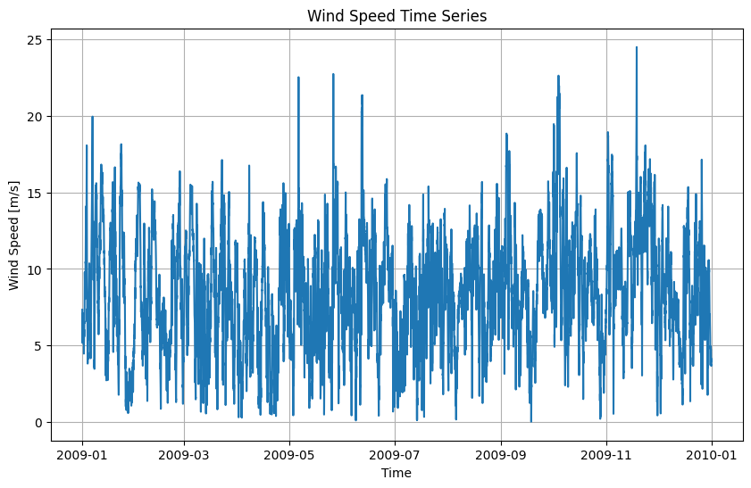

Read the data in the measurements_2009.csv file, available to you in this directory (no need to state a path only the file name). Extracted wind speed data at 100m from the WS-100 column of this file and save them in a variable called `ws100`. Plot the wind speed time series using matplotlib's .plot() function.
You should use the **object oriented** way of plotting, make sure to initialize you plot as:
fig, ax = plt.subplots()
The expected plot looks like the one below.
ws100).